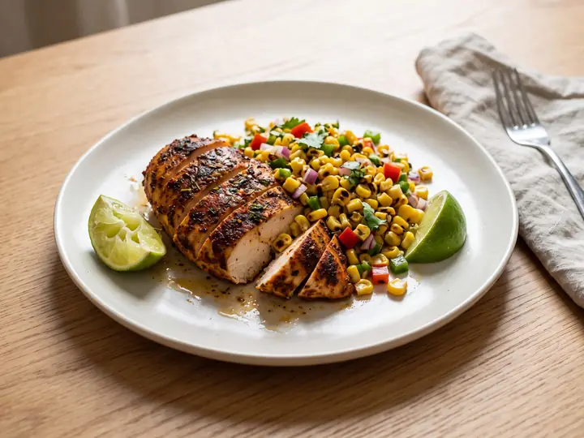
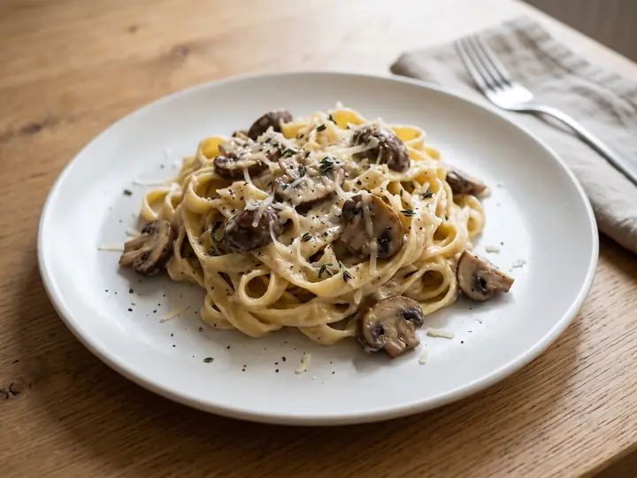
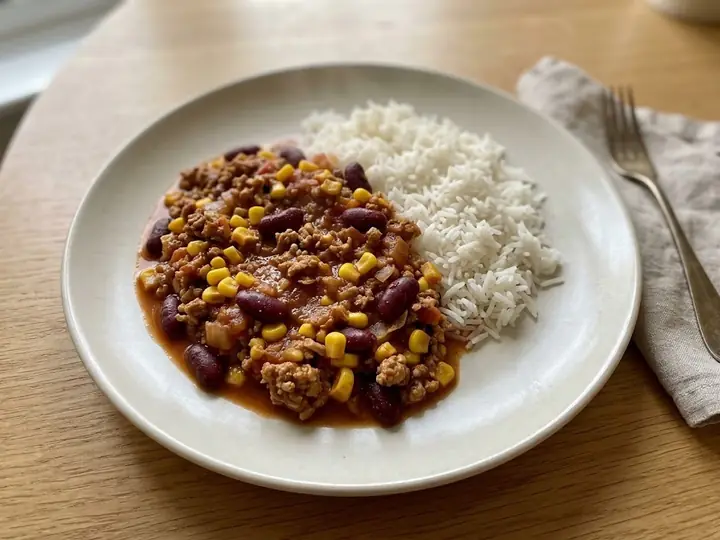
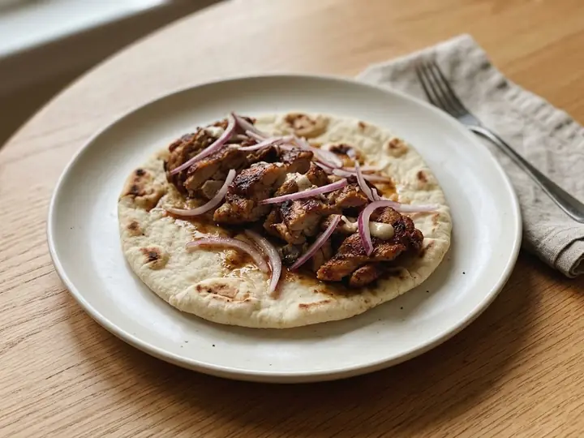

Dinner for one, without the waste.
442 recipes written for a single portion. The planner picks dinners that share their packs, so the spinach you open on Monday is finished by Thursday, and the shopping list adds it all up.
Every recipe, the planner and the shopping list are free. Pro adds low-waste planning: try it free for 14 days.
Cook something tonight
Teriyaki Salmon with Sesame Greens
Spiced Chickpea & Spinach Curry
Moroccan-Spiced Lamb with Couscous
Butternut Squash & Feta Traybake
Baked Feta Pasta
One-Pan Chorizo & Butter Bean Stew
Sesame Ginger Beef Stir-Fry
Solo Supper Pro
Waste less, plan ahead
The recipes, the planner and the shopping list are yours to use. Pro does the clever part: it plans around the packs you open and what is already in the fridge.
No card needed for the trial. Then £14.99 a year or £2.49 a month, prices include VAT. Cancel any time.
Low-waste weeks
Dinners picked to share their packs, so the other half of the spinach gets eaten.
Use what I have
Tell it what is in the fridge and it plans dinners that finish it off.
Plan next week
Sort out next week on a Sunday, with this week’s leftovers carried over.
Waste saved
See the packs you finish instead of binning, and roughly what that saves.
What are you in the mood for?
A week of dinners, one shop
This is what a filled week looks like. Swap anything you do not fancy, and the shopping list adds it all up, so half a lemon on Monday and half on Friday becomes one lemon.
- Mon

Cajun Chicken with Charred Corn Salsa18 min · USA - TueBeef Massaman-Style Curry28 min · Thailand
- Wed

Creamy Garlic Mushroom Tagliatelle16 min · Italy - ThuHarissa Salmon with Lemon Couscous17 min · Morocco
- Fri

Turkey & Sweetcorn Chilli23 min · USA - Sat

Chicken Shawarma Flatbread16 min · Lebanon - SunSpiced Red Lentil Dahl with Flatbread23 min · India
How the planner works
- 1
Pick a low-waste week
One tap chooses dinners that share their packs: the other half of the coriander, the rest of the mince. Swap anything you would not cook. Part of Pro, free for 14 days.
- 2
Shop once
One list, grouped by aisle, with quantities added up. Hide what is already in the cupboard.
- 3
Cook for one
Every recipe is a single portion, with a step-by-step cooking mode and timers.

Got half a pack left?
Cooking for one means half a tin here and half a bag there. Pick what is sitting in your fridge and finish it tonight.
- Half a tin of chopped tomatoes65
- Leftover coriander57
- A pack of chicken thighs56
- A pack of chicken breasts49
- Leftover parsley47
- Spring onions42
- Cooked rice30
- A pack of white fish fillets27
- Soured cream27
- A pack of beef mince26
- A pack of beef rump steaks19
- Leftover dill19
- Cucumber19
- Coconut milk19
- Milk18
- A pack of pork mince15
65 countries in the book
- Chinese 18
- Indian 16
- Italian 15
- Greek 14
- Mexican 13
- French 12
- British 12
- Japanese 11
- Spanish 11
- Thai 11
- Korean 10
- Moroccan 10
- American 10
- Lebanese 9
- Cypriot 6
- Indonesian 6
- Persian 6
- Irish 6
- Israeli 6
- Jamaican 6
- Malaysian 6
- Nigerian 6
- Pakistani 6
- Filipino 6
- Polish 6
- Portuguese 6
- Sri Lankan 6
- Turkish 6
- Vietnamese 6
- Argentinian 5
- Armenian 5
- Australian 5
- Austrian 5
- Belgian 5
- Brazilian 5
- Canadian 5
- Chilean 5
- Colombian 5
- Cuban 5
- Danish 5
- Egyptian 5
- Ethiopian 5
- Finnish 5
- Georgian 5
- German 5
- Ghanaian 5
- Hawaiian 5
- Hungarian 5
- Kenyan 5
- Dutch 5
- New Zealand 5
- Norwegian 5
- Peruvian 5
- Puerto Rican 5
- Romanian 5
- Russian 5
- Senegalese 5
- Singaporean 5
- South African 5
- Swedish 5
- Swiss 5
- Trinidadian 5
- Tunisian 5
- Ukrainian 5
- Uzbek 5